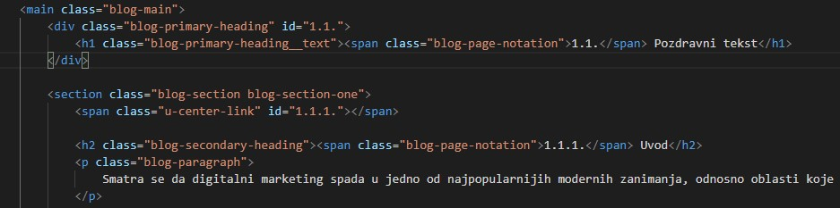
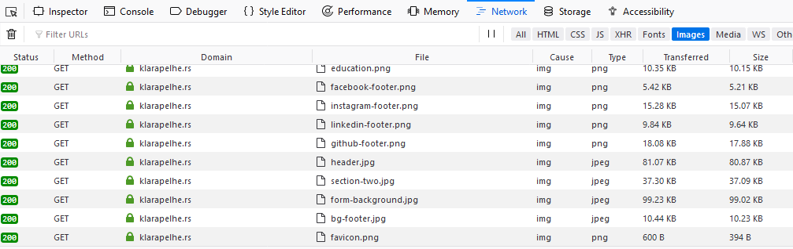

2.1. On-Site SEO strategije za dobro pozicioniranje na internet pretraživačima
-
✔ Šta je organska, a šta plaćena pretraga
-
✔ Kako se bolje rangirati na pretraživačima
-
✔ Šta znači termin On-Site SEO
-
✔ Koji meta-tagovi utiču na SEO
-
✔ Šta je HTML i koji su njegovi elementi
-
✔ Kako dobro optimizovati slike
-
✔ Šta utiče na brzinu vebsajta
-
✔ Kako izabrati adekvatan domen za vaš sajt
2.1.1. Koje vrste internet pretraga postoje?
Jedna od primarnih stvari koja zanima svakoga ko reklamira neki proizvod ili uslugu, jeste pitanje kako plasirati svoju ponudu na način da ona dođe do što većeg broja ljudi? Da li ste do sada imali prilike da čujete poznatu marketinšku izreku koja glasi: „Najbolje mesto za prikrivanje zločina jeste druga stranica na Google pretrazi“? Šta ova izreka zapravo znači? Ako uzmemo u obzir činjenicu da statistika kaže da se pažnja prosečne osobe koja pretražuje internet najčešće zadržava isključivo na prvih nekoliko rezultata, onda je aluzija i više nego jasna.
Iz navedenog podatka lako možemo zaključiti koliko je važno da naš vebsajt (ili vebsajt klijenta za koga radimo) bude što bolje rangiran na internet pretraživačima. Ono što ustvari želimo je da, kada korisnik pretražuje ključne reči koje se odnose na našu kompaniju, brend ili proizvod, već pri samom vrhu među rezultatima ugleda naš vebsajt. Jedino na taj način možemo biti sigurni da će ponuda i reklama stići do široke publike i da ćemo postići željeni cilj (bilo to povećanje prodaje proizvoda, jačanje svesti o brendu, prijavljivanje na Newsletter ili nešto drugo). Ovo nije lak i jednostavan proces i dobre rezultate nije moguće postići za jednu nedelju ili jedan mesec. Kao što je i za postizanje uspeha u bilo kojoj drugoj sferi života potrebno određeno vreme, tako je i za dobro rangiranje vebsajta ponekad potrebno mnogo truda, rada i strpljenja.
Nakon što smo utvrdili važnost dobre vidljivosti na Internetu, postavlja se ključno pitanje: „Koji su dobri i efikasni načini da to i postignemo?“ Postoje dva osnovna pristupa u rešavanju ovog problema, a da bismo ih objasnili prvo moramo videti koje sve vrste internet pretraga postoje:
- Organska ili prirodna pretraga, odnosno ona pretraga na internetu za koju nije plaćena nikakva reklama. Ova vrsta pretrage zavisi od nekoliko aspekata među kojima su najvažniji kvalitet, brzina i dobra optimizovanost našeg vebsajta. Tehnički naziv za ovu vrstu pretrage jeste SEO organska pretraga (SEO Organic Traffic). Sama skraćenica SEO označava Search Engine Optimisation, odnosno optimizaciju internet pretrage sa zadatkom što boljeg rangiranja sadržaja koji plasiramo (za čije rangiranje nije plaćena reklama).
- Plaćena pretraga, odnosno ona pretraga za koju smo izdvojili određenu sumu novca kako bi se (nakon što korisnik ukuca ključne reči) naš vebsajt rangirao što bolje među rezultatima. Ova vrsta reklamiranja je poznatija pod terminima Paid Search Advertising (PSA) ili Pay Per Click (PPC). Najpopularnija platforma preko koje se kreiraju reklame za ovu vrstu internet pretrage jeste Google Ads (Google Adwords).
Nakon što je postavljena osnova, vreme je da se u narednim poglavljima detaljnije razrade i objasne svi pojmovi i definicije koji su pomenuti u okviru ovog dela teksta. Iz razloga bolje preglednosti i funkcionalnosti, ali i zbog prilične obimnosti sadržaja ova tema biće podeljena na više tekstova koji će biti fokusirani na specifične oblasti kako organske, tako i plaćene internet pretrage.
2.1.2. Podela organskih pretraga
Kao što je već pomenuto u uvodom delu, pretragu na internetu za koju nismo izdvojili nikakav novac (u smislu reklamiranja i sponzorisanja) nazivamo organskom pretragom. Optimizacijom ove vrste pretrage postižemo to da kada korisnik unese relevantne ključne reči u pretraživač, ciljani vebsajt bude što bolje rangiran i prepoznat kao relevantan od strane search engine crawlera (programa ili robota koji su zaduženi za skeniranje vebsajtova i proveru njihovog kvaliteta).
Pre nego što se krene u detaljniju analizu, potrebno je najpre napomenuti da postoje dva osnovna načina za sprovođenje Search Engine optimizacije.
- On-Site SEO – ova vrsta optimizacije je poznata i pod nazivom On-Page SEO, a označava optimizaciju elemenata na samom vebsajtu (kao što su meta-tagovi, opisi, ključne reči, fotografije, pravilno kategorisani naslovi, brzina...). Kako bi naš vebsajt bio što bolje rangiran, potrebno je da vodimo računa o tome da svi njegovi elementi budu prilagođeni standardima koje internet pretraživači (pre svega Google) preferiraju. Za ovaj posao su često zaduženi takozvani SEO eksperti, odnosno osobe koje se primarno bave ovim delom marketinškog posla. Međutim, smatram da svako ko se iole ozbiljnije interesuje za digitalni marketing treba da poseduje makar osnovno znanje o dobroj i pravilnoj optimizaciji. Upravo će iz tog razloga u ovom poglavlju teksta biti navedeni i objašnjeni osnovni On-Site SEO elementi.
- Off-Site SEO – ova vrsta optimizacije odnosi se na skup aktivnosti koje se sprovode izvan samog vebsajta (odnosno njegovog koda), a koje imaju uticaj na njegovo rangiranje. Osnovni cilj off-site optimizacije jeste uvećanje popularnosti i relevantnosti sajta što se sprovodi putem takozvanog backlinking procesa. Ovo je tip procesa koji sprovodimo kada nam je cilj da se adresa (preciznije link) našeg sajta nađe na drugim (gostujućim) sajtovima. Na ovaj način vršimo njegovu promociju pružajući priliku posetiocima da i tim putem dođu do sadržaja koji smo mi kreirali. Osim što na ovaj način direktno utičemo na povećanje saobraćaja na našem sajtu, dobri backlinkovi ujedno predstavljaju i pozitivan signal za search engine crawlere čime našem sajtu povećavamo relevantnost, što kao posledicu ima veoma veliki uticaj i na njegovo rangiranje.
2.1.3. Glavni faktori On-Site SEO optimizacije
On-Site SEO zavisi najpre od kvalitetne optimizovanosti našeg vebsajta, ili jednostavnije rečeno, od toga kako je naš vebsajt „napisan“. Kao što je nama teško i neprijatno da čitamo rukopis osobe koja ružno piše, na isti način i search engine crawleri (ili roboti) ne favorizuju kod koji ne poštuje određene standarde. Ovaj deo optimizacije se primarno odnosi na one vebsajtove koji su pisani takoreći od nule, ali je u svakom slučaju primenljiv i na one koji su kreirani u nekom od Content Management Sistema (skraćeno CMS) kao što su to Wordpress, Joomla i slični. Vebsajt na kojem upravo čitate ovaj tekst je pisan u takozvanom „čistom kodu“ ili od nule, a jedan od razloga je bio težnja za što većom kontrolom optimizacije, kao i potpuna fleksibilnost pri izradi. Problem koji se često javlja kod CMS-a jeste taj što se oni često zloupotrebljavaju na taj način što se dopunjuju raznim plugin-ovima (programima koji daju dodatnu funkcionalnost) što može značajno uticati na performanse samog sajta. U daljem toku teksta bićete u prilici da vidite neke od primera pravilne On-Site optimizacije što će podrazumevati osnovnu analizu koda. Svi vebsajtovi na svetu pisani su primarno u markup jeziku koji se zove HTML (Hypertext Markup Language), a njegova osnovna svrha je strukturiranje sadržaja sajta. HTML je jezik koji operiše sa takozvanim tagovima ili elementima unutar kojih "pakujemo" sadržaje. Važni elementi koji čine osnovnu strukturu svakog HTML koda su: head – u koji unosimo meta-elemente (tagove) i ostale „pozadinske“ informacije, odnosno one informacije koje nisu vidljive korisnicima vebsajta, body – u koji unosimo čitav vidljivi sadržaj vebsajta i footer – koji često služi za dodatne, ali korisniku vidljive informacije. Objašnjenje samog HTML-a i njegovih osnovnih elemenata biće zasebna tema nekog od narednih tekstova.
Neki od osnovnih faktora od kojih zavisi da li će se naš vebsajt visoko pozicionirati prilikom organskih pretraga su:
- Pravilno korišćenje meta-tagova
- Pravilan odabir HTML elemenata
- Pravilna optimizacija slika
- Brzina sajta
- Izbor domena
2.1.3.1. Pravilno korišćenje meta-tagova
Da bismo krenuli dalje neophodno je ukratko objasniti šta su uopšte meta-tagovi ili meta-elementi.
Meta-tagovi predstavljaju one elemente HTML koda koji najčešće sadrže informacije koje nisu vidljive na samom "telu" sajta, jer nisu direktno namenjene korisnicima, već takozvanim crawlerima raznih internet pretraživača. Uprošćeno rečeno, njih koristimo kako bismo sajtu dali jedan određeni meta-opis.
Upravo ovaj takozvani "opis" određuje da li će naš sajt biti dobro ili loše optimizovan u pogledu On-Site optimizacije. Na nekim blogovima koji se takođe bave ovom temom često se mogu pronaći informacije o tome kako su određeni meta-tagovi "prevaziđeni" ili "deplasirani", i kako su potpuno izgubili značaj, zbog čega osećam posebnu potrebu da na ovom mestu pružim jednu drugačiju perspektivu. Iako je Google 2009. godine zaista objavio kako neki meta-tagovi (a posebno description i keywords) više nisu toliko značajni za algoritam njihovih crawlera, činjenica je da oni (a naročito description) i dalje imaju uticaja na optimizovanost, pre svega tako što povećavaju nešto što nazivamo Click through rate procentom.
Click Through Rate predstavlja pojam koji označava procenat ljudi koji su otvorili (kliknuli) prikazani vebsajt link tokom pretraživanja određenog pojma (za razliku od onih koji su ovaj link samo videli). Click through rate jeste predmet jedne posebne teme u okviru digitalnog marketinga koju možemo nazvati metrikom na digitalnim kanalima, o čemu će biti reči u narednim tekstovima.
Treba naglasiti da se posebna polemika vodi oko takozvanog keywords meta-taga koji je po zvaničnoj politici Google-a prestao da bude faktor rangiranja sajta. Moj stav je da i pored ovog podatka ipak ima smisla koristiti ga, posebno zbog toga što je ovo meta-tag koji određeni internet pretraživači i dalje uzimaju za ozbiljno, a potrebno je svega nekoliko minuta da se isti unese u kod.
Kako je predstavljen osnovni koncept meta-tagova, vreme je da se navedu i ukratko objasne oni najosnovniji:
1. Title tag: Iako tehnički ne spada među meta-tagove može se reći da je ovo jedan od najbitnijih "pozadinskih" elemenata kada je u pitanju Search engine optimizacija. Ovim tagom definišemo naslov našeg vebsajta, odnosno njegovo primarno ime. On ima direktan uticaj na dobro rangiranje vebsajta, a ujedno je i jedan od retkih tagova unutar head elementa koji nije vidljiv samo search engine crawlerima već i običnim posetiocima. Sadržaj ovog taga se može uočiti čak na tri različita mesta. Najpre ga možemo uočiti na samom tabu prilikom posete sajta, a pored ovoga on se vidi i u rezultatima pretrage (npr. preko Google-a) kao glavna rečenica koja kada se klikne direktno vodi na vebsajt. Treće mesto na kojem title tag možemo videti jesu društvene mreže, a prikazuje se kada se podeli link koji vodi poreklo sa našeg sajta - prva prikazana rečenica jeste upravo i njegov naslov.
Upravo iz razloga što title element ima veliki uticaj, moramo voditi računa o njegovoj relevantnosti tj. o tome da se njegov sadržaj zaista odnosi na sadržaj samog sajta. Optimalna dužina naslova je 50-60 karaktera što će reći da internet pretraživači favorizuju kraće naslove. Ono što je takođe važno jeste da se u naslovu navede bar jedna ključna reč koja se nalazi na početnoj (landing page) stranici, ali je pritom veoma bitno ne preterati, jer se u tom slučaju postiže kontra efekat. Ukoliko vebsajt ima više stranica, svakoj od njih treba dodeliti poseban i autentičan naslov.
<title>
Naslov sajta
</title>
2. Description meta-tag: ovaj meta-tag primarno služi da se u jednoj ili dve rečenice (maksmalna preporučena dužina je do 160 karaktera) opiše šta je cilj i sadržaj vebsajta. Njegova osnovna namena jeste da u idealnom slučaju bude prikazan ispod naslova sajta u pretrazi čime bi služio kao njegov dodatni opis. Međutim, bitno je napomenuti da opis koji mi odredimo ne mora nužno biti i prikazan, jer neki algoritmi (a posebno Google-ovi) ponekad samostalno biraju deo teksta koji onda tretiraju kao njegov opis. Ipak, ukoliko ga dobro definišemo i ako u njemu navedemo bar neku od ključnih reči koje se nalaze na početnoj stranici vebsajta, time povećavamo šansu da se upravo ovaj opis i prikaže. Kao što je pomenuto, iako description meta-tag više nije presudan za same search engine crawler-e, ukoliko je dobro definisan (a pritom i prikazan kao takav) on može uticati na veću posećenost sajta - a što je veća posećenost, to je veća šansa da će sajt biti bolje rangiran. Upravo iz tog razloga, smatram da je u svakom slučaju dobra ideja izdvojiti određeno vreme za osmišljavanje sadržaja ovog meta-elementa.
<meta name="description" content="opis sajta">
3. Author meta-tag: ovaj meta-tag nosi informaciju o tome ko je autor, odnosno kreator sajta ili sadržaja na njemu. To može biti naše ime, ime kompanije za koju radimo ili čak ime developera koji je izradio naš vebsajt. Author meta-tag takođe nije tag koji je nužno navesti, već je njegova primarna uloga (barem danas) više deskriptivnog karaktera, pa njegovo izostavljanje ne mora bitno uticati na rangiranje sajta.
<meta name="author" content="ime autora">
4. Robots meta-tag: robots meta-element pretraživačima daje instrukcije u pogledu toga da li treba da indeksiraju neku stranicu sajta ili ne. Ukoliko damo instrukciju da vebsajt ili neka njegova stranica ne treba da budu indeksirani, oni samim tim neće biti na raspolaganju korisnicima (odnosno neće biti dostupni u internet pretraživačima). Logično pitanje koje se ovde može postaviti jeste: zašto bismo ikada odlučili da vebsajt ili neki njegov deo ne budu indeksirani? Postoje dva osnovna razloga za to: prvi je da je naš sajt trenutno u fazi izrade (što ne želimo da korisnici vide); a drugi je da postoje određene stranice koje korisnicima jednostavno nisu bitne već ih koriste isključivo developeri.
Na ovom mestu je važno naglasiti to da postoje razne vrste meta-tagova koje služe određenoj svrsi, pa je iz tog razloga neophodno da unutar samog meta-elementa definišemo to kojoj vrsti pripada. Ovo činimo preko takozvanog name HTML atributa, i to tako što unosimo vrednost koja je od njegovog imena odvojena znakom jednakosti. Vrednost koja nas ovde interesuje jeste robots čime dobijamo sledeću situaciju:
<meta name="robots">
Nakon što smo odredili ime (name) atributa unevši vrednost robots, neophodno je uneti još jedan atribut koji nosi ime content. Upravo nam ovaj atribut odnosno njegova vrednost služi za definisanje indeksiranja ili pak neindeksiranja stranice. Postoje dve važne vrednosti koje možemo uneti i koje su odvojene zarezom. Svaka od ove dve vrednosti nudi dve opcije koje se u suštini svode na "da ili ne" izbor. Kada je u pitanju prva vrednost imamo sledeće opcije: index ako želimo da stranica bude indeksirana, i noindex ukoliko to ne želimo. Druga vrednost koja je od prve odvojena zarezom nudi takođe dve opcije: follow ukoliko želimo da linkovi na našoj stranici budu praćeni, i nofollow ukoliko to ne želimo. Ukoliko odlučimo da na svoj sajt (u njegov head element) uopšte i ne unesimo robots meta-tag, onda će pretraživači automatski pretpostaviti sledeću opciju: index, follow - čime će naša stranica kao i svi njeni linkovi biti indeksirani bez naše eksplicitne dozvole.
<meta name="robots" content="index, follow">
Postoji još jedan način na koji možemo kontrolisati indeksiranje stranica, a to je putem robots.txt fajla koji leži u takozvanom root direktorijumu sajta. Za detaljniju analizu ovog fajla i sadržaja koji se u njega unosi, neophodno je otvoriti jednu posebnu temu, pa ćemo na ovom mestu pomenuti samo ono najosnovnije. Prvo što je važno istaći jeste da ovaj fajl odnosno njegov sadržaj ima primarnost u odnosu na ono što smo definisali unutar robots meta-taga. To se događa zbog toga što je ovaj fajl prvi predmet analize search engine crawlera, što čini da instrukcije koje su njega unete automatski ignorišu podatke iz robots meta-taga. Stoga je veoma značajno paziti na to da ne dođe do konflikta između onoga što je sadržaj ovog fajla i vrednosti koje smo uneli u robots meta-taga. Unošenje ovog fajla nije neophodno, naročito ako se radi o sajtovima manjeg obima, ali je važno naglasiti da on često postoji unutar raznih Content Management Sistema pa je dobro da na njega obratimo posebnu pažnju kada je u pitanju proces optimizacije.
5. Keywords meta-tag: primarna svrha ovog meta-elementa (posebno u periodu kada je bilo važno koristiti ga), bila je da se navedu ključne reči koje određuju brend, proizvod ili usluge povezane sa sadržajem ciljanog vebsajta. Osnovna ideja bila je da prilikom pretrage određene ključne reči (koja postoji unutar našeg keywords meta-taga), korisnik što lakše pronađe naš sajt. Međutim, kao što to često biva u praksi, ono što je zamisao uglavnom ne korespondira sa realnošću, pa je vremenom došlo do zloupotrebe ovog meta-elementa. Ljudi su počeli masovno da navode takozvane popularne ključne reči koje nemaju nikakve veze sa sadržajem njihovog vebsajta. To je značilo da je neka popularna ključna reč kao što je to npr. "Novak Djokovic" često bila korišćena kako bi se na taj način prevarili crawleri popularnih pretraživača, a sve u svrhu privlačenja većeg saobraćaja. Na ovaj način je počela da se gubi relevantnost pretraga zbog čega su neki internet pretraživači, a na prvom mestu Google, odredili da ovaj meta-tag više nema važnost prilikom rangiranja vebsajta. Kao što je pomenuto ranije, iako ovaj meta-tag zaista više ništa ne znači za Google i neke druge pretraživače, još uvek postoje oni koji ga i dalje vrednuju (kao što je to na primer Yandex). Iz tog razloga definisanje ovog meta-taga u potpunosti zavisi od vašeg izbora – nećete mnogo pogrešiti ni ukoliko ga ne unesete, a ako ipak odlučite da ga uključite unutar koda, to u svakom slučaju može imati svojih prednosti.
<meta name="keywords" content="kljucne reci">
U navedenim objašnjenjima meta-tagova prikazane su njihove najznačajnije karakteristike, kao i to koji su benefiti njihove pravilne upotrebe. Ovo naravno nisu jedini meta-tagovi koji se inače koriste, ali jesu oni na koje je potrebno obratiti posebnu pažnju prilikom početnog rada na procesu On-Site optimizacije.
2.1.3.2. Pravilan odabir HTML elemenata
Nakon što su navedeni glavni meta-tagovi (koji se nalaze u head sekciji HTML-a), vreme je usmerimo pažnju na naredni važan faktor za pravilnu optimizaciju vebsajta. Ono što je ovde najpre neophodno objasniti jeste da se HTML markup jezik sastoji od određenih elemenata koji čine njegov „kostur“ i koje je neophodno pravilno definisati kako bi search engine crawleri znali šta koji element reprezentuje. I ovde možemo navesti jedan primer iz svakodnevnog života kako bi se što bolje ilustrovala poenta. Kada želimo da pripremimo neko jelo i imamo ispred sebe recept za njega, potrebno je da ga priremamo baš prema tom receptu i da poštujemo sve navedene korake. Ukoliko nešto preskočimo ili ubacimo pogrešne sastojke, nećemo dobiti ono što smo želeli, a naša čula i stomak neće biti zadovoljni. Sledeći ovaj primer možemo reći da svi elementi unutar koda na izvestan način predstavljaju njegov „recept“. Upravo je iz tog razloga bitno da oni imaju dobru strukturu i da njihovi „sastojci“ budu adekvatno odabrani. Ukoliko su elementi unešeni bez jasne semantike (značenja) i redosleda, search engine crawleri neće moći lako da se snađu, što će uticati na optimizovanost sajta. Iako je ovo posao koji većina od vas verovatno neće samostalno obavljati, ukoliko budete razumeli značaj HTML elemenata i njihovu semantiku, imaćete idealnu priliku da u saradnji sa web developerima postignete najbolje rezultate za sebe ili svog klijenta.
Kao što je već pomenuto ranije, objašnjenje osnova HTML-a je tema po sebi i biće joj posvećena posebna pažnja u nekom od narednih tekstova. Za potrebe ovog poglavlja, ovde će biti navedeni samo osnovni HTML elementi na koje je potrebno obratiti pažnju prilikom rada na On-Site optimizaciji. S obzirom na to da nam HTML služi za postavljanje "kostura" i unošenje celokupnog sadržaja sajta, potrebno je da taj sadržaj "upakujemo" u određene elemente kako bismo preciznije opisali njihovu svrhu. U principu, iako web browseri imaju mogućnost prikazivanja (renderovanja) sadržaja koji uopšte nije unutar nekog specifičnog HTML taga, ovo je praksa koju treba uveliko izbegavati, jer u tom slučaju sadržaj u potpunosti gubi svoju semantičnost za web crawlere. Ovo naposletku dovodi do toga da naš vebsajt ima krajnje loše SEO performanse.
Kao i bilo koji drugi tekst, tako bi i stranica našeg vebsajta najpre trebalo da ima nekakav naslov. Za ovu svrhu HTML nam nudi nekoliko opcija, odnosno nekoliko različitih tagova unutar kojih ih unosimo. Ove tagove nazivamo heading tagovima, a skraćeno ih zapisujemo na sledeći način: h1, h2, h3... Onaj naslov koji smatramo najvažnijim obično unosimo unutar h1 taga. Pored ovoga, postoje i opcije u rasponu od h2 do h6 za naslove koji imaju manju važnost. U praksi se najčešće koriste tagovi između h1 i h3, gde je h1 primaran naslov, dok h2 često služi za podnaslove, a h3 za npr. naslove potpoglavlja. Veoma je bitno da sve naslove rangiramo po njihovoj važnosti odnosno da im dodelimo pravilan tag. Ovo nije bitno samo zbog njihovog vizuelnog prikaza na vebsajtu (za šta koristimo drugi jezik - CSS) već zbog pomenute semantike tagova, odnosno njihovog specifičnog značenja za pretraživače. Kada su search engine crawleri u mogućnosti da na jednostavan način protumače naš kod, tada značajno povećavamo šansu da nas bolje i rangiraju.
Naredni HTML element o kojem takođe treba da vodimo računa jeste paragraf element. Ovaj element koristimo kada unosimo bilo koji regularni tekst (a koji nije naslov ili podnaslov). On jednostavno reprezentuje logički odvojene celine teksta, analogno bilo kojem drugom tekstu koji bismo pisali recimo u Microsoft Word-u, pa bi tako trebalo da svaki pasus teksta bude deo zasebnog paragraph taga. Search engine crawleri su u stanju da naprave jasnu distinkciju između onoga što je smešteno u heading tag i onoga što je smešteno u paragraph tag, pa je stoga veoma bitno paziti kakav sadržaj gde unosimo.
Pored već navedenih elemenata, u ovom delu teksta važno je napomenuti i ostale HTML elemente koji dodatno definišu strukturu vebsajta. To su u prvom redu nav, header, main, footer, img i ostali tagovi od kojih svaki pojedinačno poseduje određenu semantičku vrednost (što je i njihova primarna uloga). Nav služi za definisanje navigacije sajta, img za importovanje slika, header za gornji, main za središnji, a footer za donji deo sajta. Postoji i takozvani neutralni div tag (ime potiče od reči division) koji često služi za izolaciju određenih delova koda radi lakšeg rada na njihovom dizajnu. Ovaj tag nema značajniju semantičku vrednost, upravo iz razloga što njegov sadržaj može biti bilo kakav.
Radi bolje ilustracije na slici ispod (napomena - vidljivo samo na laptop i desktop računarima) možete videti jedan relevantan primer. Kao što možete primetiti h1 je tag koji je korišćen za glavni naslov teksta, h2 za podnaslov, p za običan tekst, a section i div za odvajanje logičkih celina unutar sajta. Ovakvu ili sličnu strukturu je veoma bitno praktikovati prilikom izrade, a naročito optimizacije sajta. Ukoliko se ispoštuju sva "pravila" pisanja dobrog semantičkog koda, velika je šansa da će vaš vebsajt postići bolje rezultate prilikom pretrage.
2.1.3.3. Pravilna optimizacija slika
Naredni važan faktor jeste dobra optimizacija i pravilno definisanje HTML markup-a kada su u pitanju slike ili fotografije. Skoro da i ne postoji moderan vebsajt u kojem se ne može pronaći barem jedna slika, bilo da je njena svrha da stilski ulepša sajt ili da pruži bolju ilustraciju nekog teksta. Upravo iz ovog razloga veoma je bitno paziti na to da se prilikom unosa slika poštuju dobre i proverene SEO prakse, a najbitniji aspekti o kojima treba voditi računa su:
1. Relevantnost slika: ljude je često lakše privući dobrom fotografijom nego dobrim tekstom, barem je to slučaj prilikom prve posete sajtu. Zbog toga u svakom slučaju nije loša ideja da se tekst upotpuni njima, posebno kada ima opravdanih razloga za to. Ono čemu treba pridati posebnu pažnju jeste da te fotografije ili slike budu relevantne, odnosno da budu povezane sa tekstom i da se odnose na njega. Da li bi imalo smisla da se, recimo, unutar ovog teksta koji trenutno čitate nađe fotografija nekog slatkog psa? Ona bi mnogima verovatno bila interesantna, ali ona ni na koji način ne bi pomogla da se ilustruje sadržina ovog teksta. Kao što je to već pomenuto ranije, search engine crawleri (a posebno Google-ovi) itekako vode računa o relevantnosti sadržaja i paze na to da se posetioci ni u jednom trenutku ne dovedu u neku zabludu. Važno je imati u vidu i to da pretraživači u težnji za filtriranjem relevantnog sadržaja, imaju mogućnost poređenja sadržaja vebsajta sa naslovom koji smo slici dodelili. Zbog toga treba paziti na to da naslov slike, a i sama slika, budu adekvatni, tj. da odgovaraju tekstu u okviru kojeg se nalaze. U suprotnom slučaju samim posetiocima možemo delovati neozbiljno, što rezultuje time da će njihove posete našem sajtu verovatno biti sve ređe.
2. Adekvatna rezolucija slika: osim toga što slike treba da budu relevantne, veoma je bitno i da budu u pogodnoj rezoluciji. Bolje je uopšte i ne postaviti sliku nego je postaviti u pogrešnoj rezoluciji. Ukoliko na nekom vebsajtu vidimo fotografiju koja je mutna, na kojoj se vide pikseli i koja je nejasna, verovatno ćemo steći jedan loš utisak o njemu. Kako se ovo ne bi dešavalo, prilikom unošenja slika važno je obratiti pažnju na to da one budu jasne i da njihova rezolucija bude adekvatna. Kao što rezolucija slike nipošto ne treba da bude premala, tako isto treba izbegavati scenario gde je ona veća nego što je to neophodno za kvalitetan prikaz na sajtu.
3. Veličina slika: ovo je jedan od najbitnijih faktora za optimizaciju slika i na neki način je povezan sa prethodno navedenim uslovom. Kada kažemo da slika treba da bude u adekvatnoj rezoluciji time ni na koji način ne podrazumevamo da ona mora biti i velika. Sve slike na vebsajtu treba optimizovati tako da njihova veličina odgovara njihovoj ulozi, u smislu da vizuelno mala slika ne bi trebalo da bude "fizički" velika (idealno ne bi trebalo da je veća od 300-400 kilobajta). Ovo se lako može postići putem raznih alata za njihovu modifikaciju, među kojima je svakako najpoznatiji Adobe Photoshop. Ukoliko posetite osnovnu stranicu mog vebsajta (onu na kojoj se ne nalazi blog), možete primetiti da se na njoj nalazi veliki broj slika i ikonica. Sve one imaju dobru rezoluciju, pri čemu njihova veličina ne prelazi 100 kilobajta, a dokaz za to možete videti na fotografiji ispod u okviru konzole Mozilla internet pretraživača (prečica za direktan pristup Mozilla konzoli je Ctrl+Shift+I). Napomena – fotografija je vidljiva samo čitaocima koji blogu pristupaju sa desktop ili laptop uređaja.
Zbog čega je veličina slika toliko bitna za optimizaciju sajta? Razlog za to je taj što su one u praksi najčešće "najteži" elementi sajta, u smislu da zauzimaju daleko najviše prostora, što je jedan od glavnih faktora koji utiču na brzinu učitavanja. Nije retka pojava da sajtovi sadrže fotografije koje su velike i po nekoliko megabajta što kao posledicu ima drastičan uticaj na brzinu učitavanja, a upravo je ovo faktor koji značajno deluje na SEO performanse samog sajta. Ovo je činjenica na koju je veoma važno skrenuti pažnju kako web dizajnerima tako i web developerima.
4. Adekvatan format slika: takođe jedna bitna stvar kada se radi o optimizaciji i pripremi slika jeste njihov format. Glavna dva formata kada su u pitanju vebsajtovi jesu JPG i PNG. JPG je format koji koristimo za one slike koje imaju određenu pozadinu (ovo je često slučaj kada su u pitanju fotografije, vizuali, screenshotovi...). Ovo je ujedno i format koji se najčešće koristi. Sa druge strane, PNG format koristimo za slike koje zahtevaju transparentnu pozadinu, odnosno onu pozadinu koja treba da bude u potpunosti providna (ovo se najčešće koristi kod izrade logo-a). Ovo je takođe posao koji je primarno namenjen web dizajnerima, ali smatram da kao iskusni digitalni "marketar" treba da poznajete osnovna pravila dobre optimizacije slika, čime ćete stvoriti uslove za bolju i efikasniju saradnju sa dizajnerima i developerima.
5. Korišćenje alt teksta: alt tekst formalno predstavlja atribut img HTML elementa. On ima dve osnovne svrhe: da slikama pruži dodatni opis i da se, ukoliko se iz nekog razloga slika ne učita, prikaže umesto nje, i tako posetiocima pruži zamenu u vidu tekstualnog objašnjenja. Upravo iz ovog razloga pomenuti atribut i nosi naziv alternative text, jer služi kao alternativa za situacije kada na vebsajtu postoji određeni problem prilikom učitavanja slika. Za search engine crawlere dodavanje ovog atributa predstavlja znak da smo vodili računa o pravilnom pisanju koda, jer se slikama daje jedan dodatni kontekst koji pretraživači mogu da povežu sa njenim osnovnim sadržajem. Na primer, ako imamo fotografiju cveta, kao alt tekst možemo navesti "cvet". Ovo znači da će posetilac čak iako ne bude mogao da vidi fotografiju biti u prilici da vidi njen opis, odnosno u tom slučaju umesto fotografije prikazaće mu se tekst "cvet". Ali što je za nas još važnije, pretraživači će biti u stanju da ovoj fotografiji daju jedno dodatno značenje, čime naš kod dobija na optimizovanosti upravo zbog dobre semantike markup-a.
<img src="cvet.jpg" alt="cvet">
Kao što vidimo, sadržaj alt teksta predstavlja jedan od najvažnijih faktora za dobru SEO optimizaciju slika. Koliko god da je tehnologija uznapredovala, search engine crawleri i dalje nisu u mogućnosti da vide fotografiju onako kako je vidimo mi našim ljudskim očima. Zbog toga se oni najpre oslanjaju na njen opis koji onda pokušavaju da povežu sa sadržajem. Preporuka je da sadržaj alt teksta bude koncizan i kratak, da bude specifičan (odnosno da se svakoj slici dodeli zaseban alt tekst). Takođe se preporučuje da alt atributi sadrže neku od ključnih reči iz teksta u okviru kojeg se sama slika nalazi, ali je takođe važno i da se one ne nagomilavaju. Određivanje sadržaja alt atributa može isprva delovati kao jedan zanemarljiv aspekt optimizacije, ali za postizanje maksimalnih rezultata, ovom delu SEO-a važno je posvetiti određeno vreme.
2.1.3.4. Brzina sajta
Ovaj faktor je takođe veoma značajan kada govorimo o dobroj i pravilnoj Search Engine optimizaciji. Sam Google je naveo da brzina sajta i brzina učitavanja pojedinačnih stranica imaju veliki uticaj prilikom rangiranja. Pored ovoga, loša brzina utiče i na same posetioce. Podaci na određenim blogovima (poput Machmetricsa) govore o tome da više od 50% korisnika, koji na učitavanje stranice čeka duže od 3 sekunde, istu napušta sa malim procentom vraćanja. Procenat korisnika koji brzo napušta sajt za internet pretraživače predstavlja relevantnu informaciju o lošem kvalitetu sadržaja (u ovom slučaju sporijem učitavanju istog), što direktno utiče na rangiranje. Ove činjenice veoma jasno govore o tome koliko je bitno da se vebsajt brzo učitava, a glavni načini na koje možemo postići veću brzinu su:
1. Fajlovi na vebsajtu treba da budu što manje veličine: o ovome smo već govorili kada smo objašnjavali značaj dobre optimizacije slika. Sve što se postavlja na vebsajt treba da se kompresuje tako da zauzima minimalan mogući prostor, ali da sa druge strane ne izgubi mnogo na kvalitetu. Vebsajt ne treba opterećivati dodatnim sadržajem koji nije neophodan (treba postavljati samo relevantne fotografije, a dodatne funkcionalnosti unositi samo onda kada one zaista doprinose boljem user experience-u). Mnogi web developeri vole da "ukrašavaju" svoje vebsajtove raznim dodacima (plugin-ovima) i efektima koji mogu uticati na njegove performanse, a koji sa druge strane ne doprinose značajno njegovoj funkcionalnosti. Ovo je naravno moguće izbeći ako imamo potpunu kontrolu nad kodom, što najčešće nije slučaj (osim ako niste developer), pa je zbog toga važno obratiti pažnju na to da naš sajt ne bude nepotrebno opterećen. Vlasnici Wordpress sajtova bi na ovo trebalo da obrate posebnu pažnju.
2. Broj redirekcija na vebsajtu treba da bude što manji: pojam redirekcije je tehnički pojam i nije ga lako objasniti. Uprošćeno rečeno, redirekcija se dešava kada korisnik klikne link vašeg vebsajta, pri čemu kliknuti link aktivira neki alternativni, čime je umesto jednog request-a izvršeno dva ili više što iziskuje dodatno vreme i utiče na brzinu učitavanja. Pošto smo rekli da brzina učitavanja direktno utiče na SEO performanse, time postaje očigledno da ovu praksu treba izbegavati koliko je to moguće. U praksi se redirekcije najčešće koriste kada je sajt u izradi ili kada recimo korisnike koji mu pristupaju preko mobilnih uređaja preusmeravamo na alternativni link radi boljeg User Experience-a.
2.1.3.5. Izbor vebsajt domena
Poslednji, ali ne i najmanje važan faktor koji ćemo pomenuti u ovom delu teksta, a koji takođe ima značajan uticaj na dobru optimizaciju vebsajta jeste izbor njegovog domena. Domen (domain name) je jednostavno rečeno internet adresa našeg vebsajta koja je zapisana "ljudskim" jezikom. Prave adrese kojim operišu računari su predstavljene u brojevima koje nije lako memorisati, pri čemu nam pomaže takozvani DNS koji ove brojeve prevodi u ljudski jezik. Ovu adresu koristimo svaki put kada želimo da posetimo određeni vebsajt i to jednostavnim unosom u URL bar (npr. www.klarapelhe.rs). Naziv domena je bitan, kako za same korisnike koji posećuju vebsajt, tako i za search engine crawlere koji proveravaju koje reči su korišćene u nazivu, koja je domen ekstenzija (objašnjenje ispod) itd. Osnovni elementi o kojima je bitno voditi računa prilikom izbora domena su sledeći:
1. Naziv vebsajta treba da bude kratak i prepoznatljiv: naziv našeg domena jeste jedan od načina na koji se predstavljamo na pretraživačima, i zbog toga je važno paziti na šta se on odnosi. Ukoliko je vebsajt naš lični projekat, kao što je to slučaj sa ovim blogom, onda bi on trebalo da sadrži vaše ime, što važi i za slučajeve kada se radi o nekoj kompaniji ili brendu koji promovišemo. Naziv domena ne bi trebalo da prelazi 15 karaktera i u njemu bi trebalo navesti samo ono što je osnovno (kao što je to recimo ime kompanije). Takođe, u naziv bi trebalo uključiti samo slovne karaktere, dok brojevi i znakovi nisu preporučljivi osim u neophodnim situacijama (na primer ukoliko je broj sastavni deo imena brenda).
2. Ekstenzija domena je bitna: ekstenzija domena predstavlja dodatak koji se nalazi na samom kraju njegovog naziva, dakle, nakon poslednje tačke. Ekstenzije koje se globalno najčešće upotrebljavaju su: .com, .org, .net, .io, .edu i slične. Ove ekstenzije mogu da upućuju na delatnost kojom se neko bavi (.org kao skraćenica za organization, .edu kao skraćenica za education...), da upućuju na određenu državu (.rs kao nacionalni domen za Srbiju, .es kao kao nacionalni domen za Španiju...) ili mogu da budu uopšteni poput .net i .com. Ukoliko nam je primarni cilj targetiranje domaće publike, preporuka je da se koristiti nacionalni domen zemlje u kojoj se nalazimo. Zbog čega je ovo toliko važno? Iz jednostavnog razloga što internet pretraživači imaju mogućnost da prepoznaju zemlju iz koje se vrši pretraga, pa tako često favorizuju sajtove sa odgovarajućom ekstenzijom. Sa druge strane, ukoliko se obraćamo globalnom tržištu sasvim je u redu da odaberemo ekstenziju koja je neutralna (poput .com, .net...). Uprošćeno rečeno, izbor ekstenzije našeg domena bi trebalo prilagoditi onome što predstavlja našu ciljnu grupu.
3. Uvek treba voditi računa o sigurnosti: jedna od prvih stvari na koju treba obratiti pažnju prilikom posete određenog vebsajta jeste koliko je poseta njemu bezbedna. Ovo se posebno odnosi na situacije kada se na sajtu obavlja neka kupovina ili izvršava određena transakcija. Kako bismo posetiocima našeg vebsajta pružili jasan signal o tome da mogu da budu sigurni, prilikom zakupa hosting paketa treba da vodimo računa o tome da dobijemo takozvani SSL sertifikat (Secure Sockets Layer certificate koji predstavlja srž sigurnosti i zaštite podataka na internetu). Ovaj sertifikat štiti kako vlasnike sajtova, tako i posetioce na taj način što otežava presretanje informacija i dobijanje uvida u lične podatke posetilaca. (Ne)postojanje ovog sertifikata može se primetiti već na samoj adresi vebsajta; samo za one adrese koje počinju sa https možemo biti sigurni da su zaštićene, dok ukoliko počinju sa http (dakle bez slova s) znači da ne poseduju ovaj sertifikat. Ovaj faktor je veoma bitan i za search engine crawlere (naročito za Google-ove) pa se tako https favorizuje u odnosnu na http kada je u pitanju rangiranje. Pored toga što daju sigurnost posetiocima, sajtovi koji poseduju SSL sertifikat se često i brže učitavaju. Neke web hosting kompanije ih automatski dodeljuju uz hosting pakete, a kod nekih je potrebno posebno ih zatražiti. Posedovanje SSL sertifikata je veoma značajno i stoga bi trebalo voditi računa o tome da bude uključen u domen sajta.
2.1.4. Zaključna razmatranja
Čitajući navedene preporuke možda ste stekli utisak da je primarni fokus ovog teksta bio na objašnjenju On-Site optimizacije samo za one vebsajtove koji su pisani u čistom kodu ili "od nule". Iako proces optimizacije izgleda nešto drugačije ukoliko se radi o sajtovima kreiranim pomoću Wordpress platforme ili nekog drugog CMS-a, svi navedeni faktori odnose se podjednako na sve vrste sajtova. Optimizacija sajtova kreiranih u okviru CMS platformi (ovde se naročito misli na Wordpress) jeste posebna tema kojoj ćemo pažnju posvetiti u nekom od narednih tekstova. Međutim, ono što se ističe kao glavna razlika jeste što se na njima optimizacija najčešće vrši i preko nekog od pomoćnih SEO alata i plugin-ova. Jedan od najpopularnijih Wordpress SEO pluginova jeste Yoast SEO. Glavna karakteristika ovog alata jeste ta što omogućava da se za svaki tekst na vebsajtu izvrši provera ključnih reči, kao i da se analizira njihova relevantnost. Pored toga, ovaj alat istovremeno pruža i savete za bolju optimizaciju sadržaja i linkova. Sve ovo čini da rad na optimizaciji u okviru Wordpress-a zbog svoje automatizovanosti bude nešto lakši nego što je to slučaj kod vebsajtova pisanih "od nule". U svakom slučaju, bilo da radite na vebsajtu koji je pisan u čistom kodu ili na vebsajtu kreiranom u Wordpressu (ili nekom drugom CMS-u), ukoliko poštujete sve bitne elemente dobre optimizacije, velike su šanse da ćete postići maksimalne rezultate i da će se vaš vebsajt brzo naći među prvim rezultatima organske internet pretrage.
Sve On-Site strategije navedene u okviru ovog poglavlja su veoma važne za pravilnu optimizaciju vebsajtova. Na njima je potrebno uporno i strpljivo raditi, a rezultati će neminovno doći nakon određenog vremena (obično se procenjuje da je potrebno između 3 do 6 meseci za postizanje prvih značajnijih ciljeva). Samo ukoliko je naš vebsajt zaista kvalitetan i ako poseduje određenu vrednost možemo očekivati veći broj poseta, a sam tim i dobro rangiranje u rezultatima pretrage.
Smatram da je u ovom trenutku bilo dovoljno teorije i da je pravo vreme da se krene sa procesima optimizacije u praksi. Sve što smo u okviru ove teme obrađivali predstavlja jedan opšti pregled najbitnijih On-Site SEO strategija i procesa, a detaljnjije objašnjenje vas očekuje već u narednim tekstovima gde ćemo veću pažnju posvetiti pojedinačnim aspektima ove široke oblasti. S obzirom na to da Off-Site SEO ima podjednak značaj za rangiranje sajtova kao i On-Site SEO, već naredni tekst biće posvećen ovoj vrsti optimizacije. Ukoliko imate neko dodatno pitanje ili komentar vezan za ovaj tekst, slobodno mi pošaljite poruku putem kontakt forme koja se nalazi u glavnom navigacionom meniju bloga. Vidimo se vrlo uskoro sa novim blog tekstom!